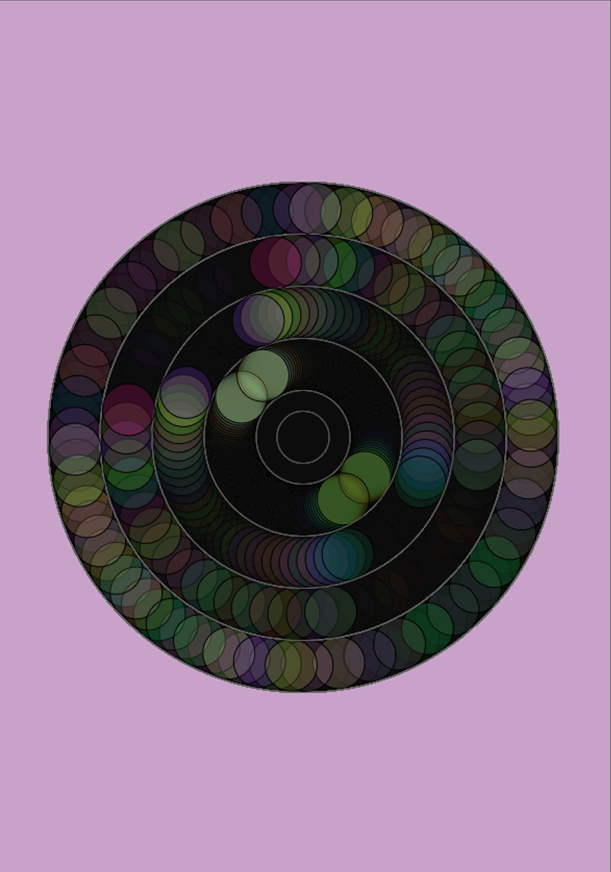
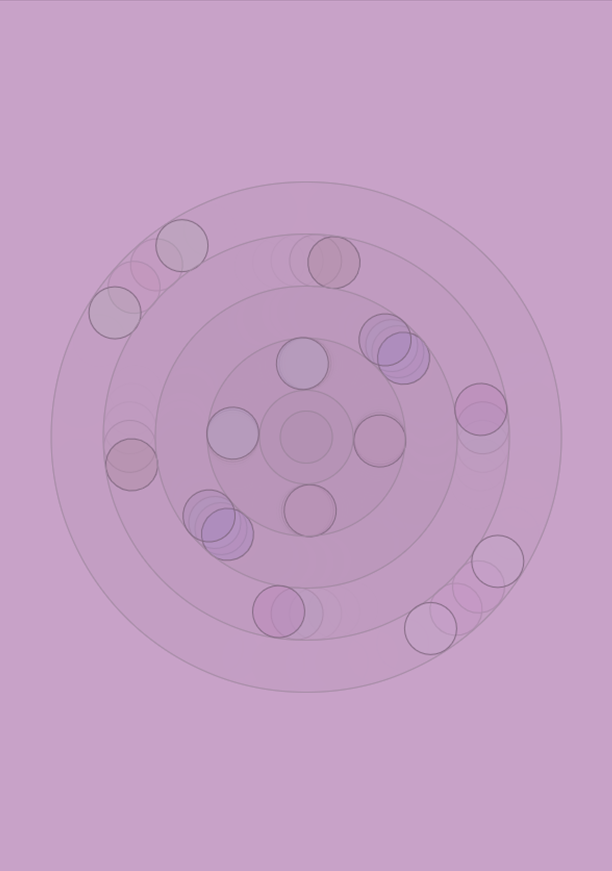
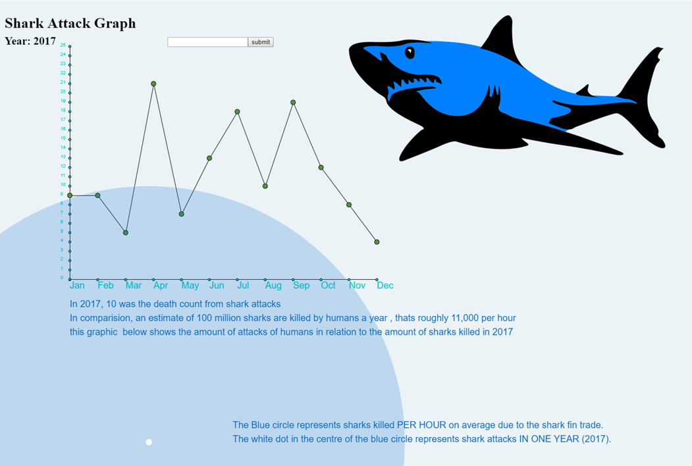
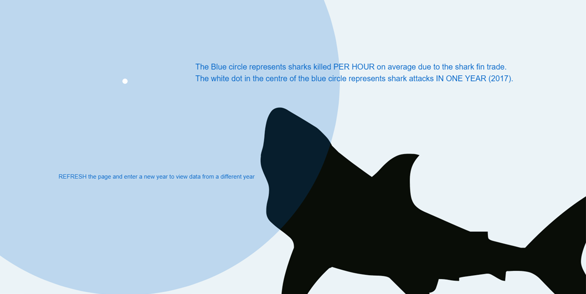
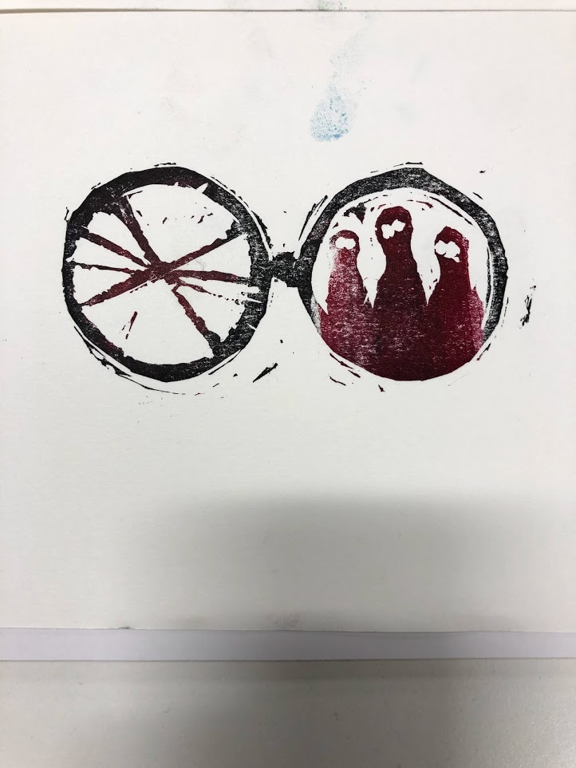
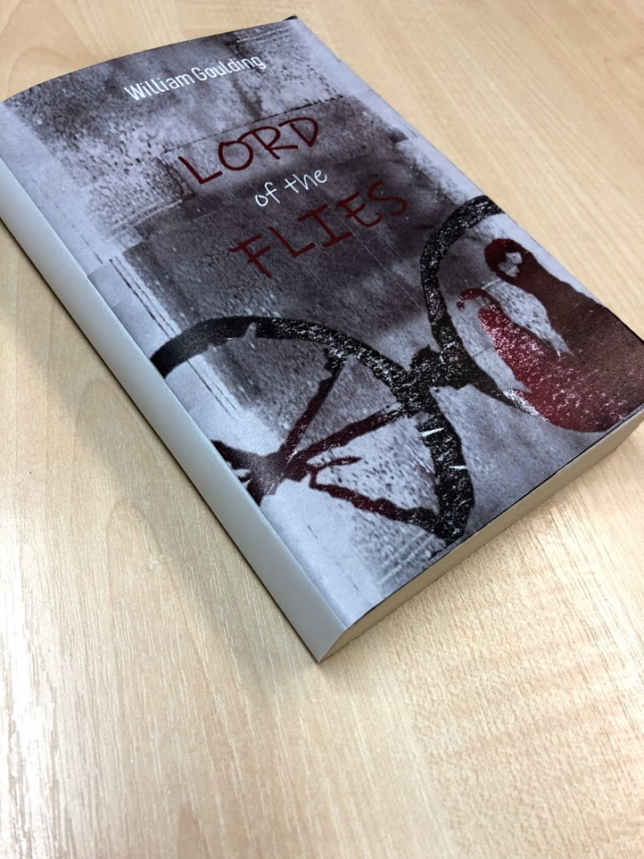
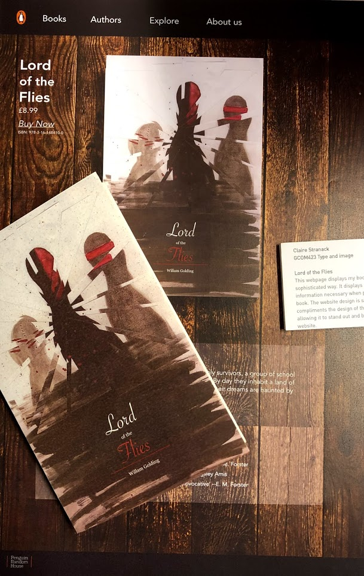
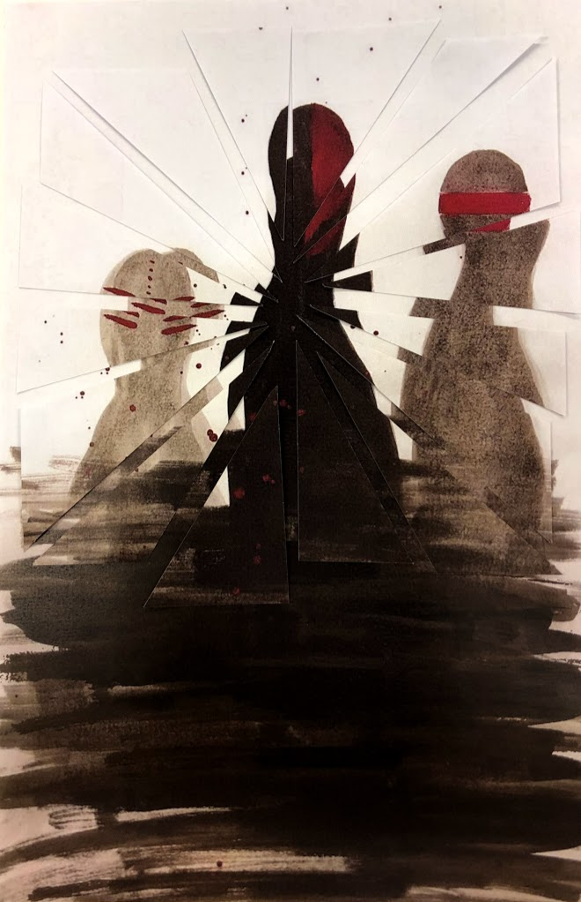

This project focused on creating a creative visulisation of a telecomunications system,
we created a firewall represetinn how data fliters data, and how hacking can intrude our systems
Creative Coding




Here we looked at how we could create art
and visual representations of data using code.
Type and Image




In this projects we looked at how,
through the use of type and image, create a bookcover for Lord of the Flies by Willam
Golding.